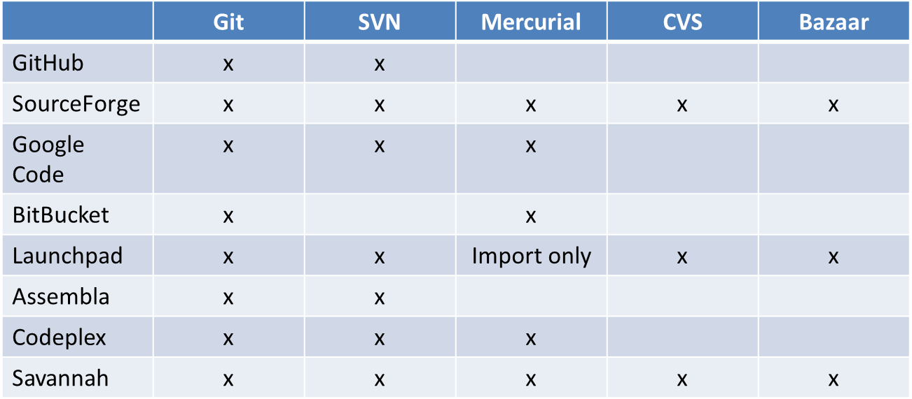
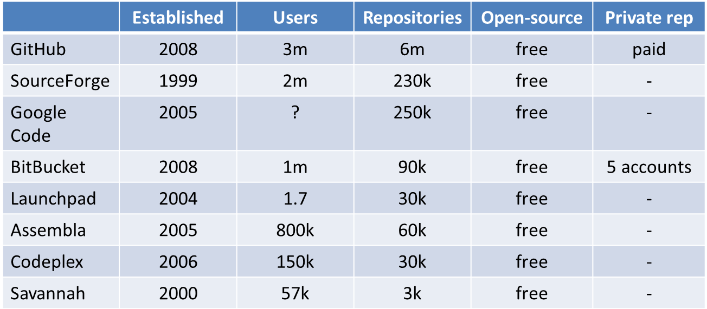

Online Repositories
GitHub, BitBucket, SourceForge
Decision factors
Functionality
- VCS support
- Mailing lists, list management and archives
- Bug/issue tracker
- Software package hosting/publishing
- Statistics reporting
- Forums, wikis
- Access control
- Project/release management
Facil upgrade to additional functionality
Facil backup
Publicly available code
Upload/download speed
User suport
Support for the chosen DIE
Repository stability
Repository maintenance
Decision based on circumstances
- Required functionality
- Effort needed to manage the project
- Tool popularity amongst the developers' community
- Size and diversity of contributers to the project
Hosted services


- Better branching and merging
- Greater speed
- Ability to login using certificates
- Total ownership of projects
Demo